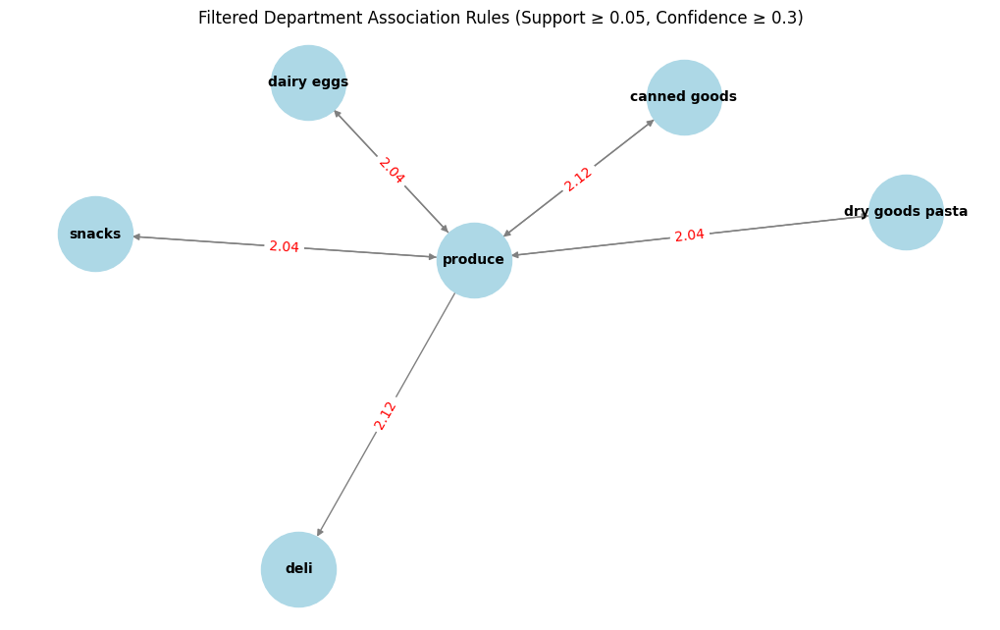
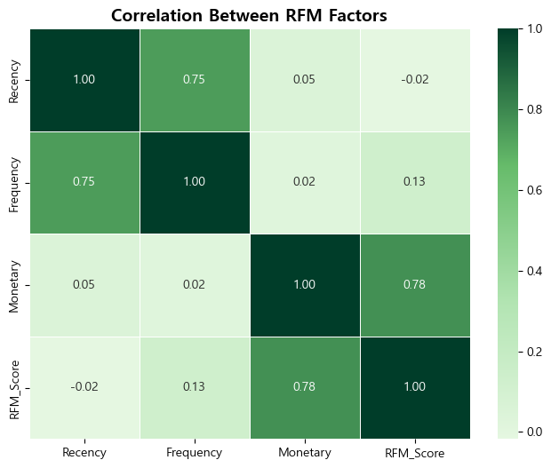

“VIP가 아니라 54.1%를 움직이면 리텐션이 바뀐다”
Instacart 재구매(리텐션) 개선: RFM 세분화 & CRM/실험 설계
프로젝트 기간: 2025.02.19 ~ 2025.02.28
이 프로젝트는 “재구매율을 높이려면 누구에게 무엇을 해야 하는가?”를
세그먼트(고객군) × 행동 레버 관점으로 재정의했습니다.
전체 고객의 54.1%를 차지하는 ‘관심 필요 고객’을 핵심 타겟으로 설정하고,
구독/번들/쿠폰/추천으로 이어지는 실행안을 설계했습니다.
핵심 메시지: 분석은 끝이 아니라, 실험 가능한 CRM 액션(누구에게·언제·무엇을)으로 번역되어야 한다.
특히 세그먼트별 액션을 바로 운영에 적용할 수 있도록 대상 고객, 노출 시점, 혜택 구조, 검증 KPI까지 함께 정의했습니다.
1. 문제 정의: “재구매를 만드는 고객”을 먼저 규정하자
리텐션을 개선하기 위해서는 단순 평균이 아니라 “어떤 고객이 어떤 행동 때문에 재구매하는가”를 먼저 정의해야 합니다.
따라서 본 분석의 목표는 고객 행동 데이터를 기반으로 핵심 리텐션 고객군을 식별하고 재구매를 유도할 수 있는 행동 레버(Actionable lever)를 찾는 것이었습니다.
- 핵심 KPI: 재구매율(Repeat Rate) / 주문 빈도(Frequency) / 재구매까지 걸린 시간(Time-to-Next-Order)
- 전략 단위: VIP 소수 vs. “규모가 큰 중간층” 중 어디를 움직일지 선택
- 가설: 신선식품 중심 반복 구매가 리텐션을 견인하고, 장바구니 크기보다 “주기성”이 더 중요할 수 있다
2. 데이터 & 분석 준비
- Instacart 공개 데이터(주문/상품/카테고리)를 통합해 분석용 테이블 구성
- 주요 파생변수: 재구매(reordered), 장바구니 크기(basket size), R/F/M 지표
포인트: “집계 가능한 분석용 뷰/테이블”이 있어야 세그먼트·실험·대시보드로 확장할 수 있습니다.
3. EDA ① 재구매 패턴: 어떤 카테고리가 반복 구매를 만드는가?
부서(Department) 및 카테고리 그룹 기준으로 재구매율을 비교해 반복 수요가 큰 영역을 확인했습니다. 결과적으로 신선식품 중심의 반복 수요가 확인되어 구독/정기 구매 설계의 근거가 되었습니다.
신선식품과 생활필수 카테고리에서 재구매율이 가장 높게 나타났습니다. 이는 해당 상품군이 단발성 구매가 아닌 정기적 소비 패턴 가지기 때문이며 대량 구매 유도보다 구매 주기를 편리하게 만드는 전략 (구독, 정기배송, 자동 재주문)이 리텐션에 더 효과적일 가능성을 시사합니다.
4. EDA ② 장바구니 행동: “많이 사는 고객”이 아니라 “자주 사는 고객”
장바구니 크기가 큰 고객은 재구매율이 다소 높았지만 해당 고객군의 규모는 매우 작았습니다. 반면 대부분의 고객은 10개 미만의 상품을 구매하는 소량 주문 패턴을 보였습니다. 따라서 전체 리텐션을 개선하기 위해서는 VIP 고객이 아니라 규모가 큰 중간층 고객의 주문 빈도를 높이는 전략이 더 효과적이라고 판단했습니다.
5. 번들/추천 레버: 연관규칙(Association Rules)
장바구니 내 동시 구매 패턴(지지도·신뢰도·향상도)을 기반으로 “함께 담기 좋은 번들” 후보를 정의했습니다. 이는 장바구니/결제 단계 추천, 번들 할인, 개인화 쿠폰 타깃팅으로 확장 가능합니다.

Action 예시: 상위 규칙에서 번들 후보 5~10개 선정 → 관심 필요 고객 대상으로 추천 노출 A/B → KPI(번들 클릭률, 번들 포함 주문 비중, 30D 재구매율, UPT)로 검증
6. 고객 세분화: RFM 기반 세그먼트 정의
Recency(최근 주문 간격) / Frequency(주문 빈도) / Monetary(평균 장바구니 크기)를 점수화해 RFM_Score를 만들고, 운영 가능한 4개 세그먼트로 분류했습니다.
7. 세그먼트 해석 보강: RFM 요소 상관관계
RFM 구성요소의 관계를 확인해 점수 해석을 보강했습니다. (예: RFM_Score와 Monetary의 상관이 상대적으로 높다면, ‘구매 규모’가 점수에 더 큰 영향을 줄 수 있음)

8. 실행 전략(CRM) & 실험 설계
세그먼트별 실행안
- 관심 필요 고객(54.1%): 구독/정기구매 제안 + 번들 추천(연관규칙) + 장바구니/결제 타이밍 혜택
- 잠재 고객(38.0%): 카테고리 확장 쿠폰, 개인화 추천 강화(교차판매)
- 우수 고객(0.7%): VIP 혜택 유지 + 고정 수요 품목 구독 전환
- 이탈 위험(7.2%): 웰컴백/리마인드 캠페인, 재입고·가격 알림으로 복귀 유도
A/B 테스트(초안)
Primary KPI: 30D 재구매율(Repeat Rate)
Secondary: 주문 빈도, UPT, 번들 클릭률/포함 주문 비중, 쿠폰 사용률
Guardrails: 할인 비용, 배송비 부담, 환불/CS 증가, 마진 하락
9. 예상 효과
이번 분석은 실제 실험이 아닌 전략 설계 단계이지만 데이터 분석 결과를 기반으로 다음과 같은 기대 효과를 가정할 수 있습니다.
- 54.1% 규모의 '관심 필요 고객' 재활성화
- 반복 구매 상품 중심 구독 모델 도입
- 장바구니 번들 추천을 통한 객단가 상승
특히 중간층 고객의 주문 빈도를 높일 경우 전체 리텐션 지표에 가장 큰 영향을 줄 것으로 예상됩니다.